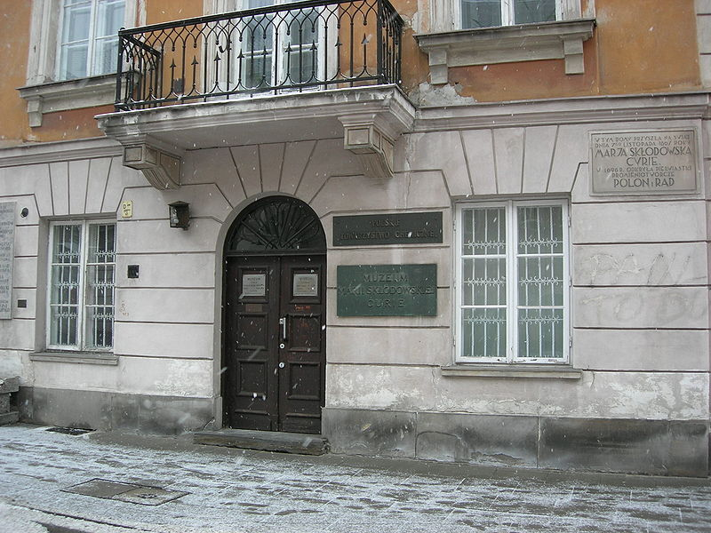

Enfance

Maria Salomea Skłodowska naît à Varsovie, alors dans l'Empire russe, d'un père d'origine noble (herb Dołęga), professeur de mathématiques et de physique, et d'une mère institutrice. Elle est la benjamine d'une famille de trois soeurs, Zofia (1863-1876), Bronisława (Bronia) Dłuska (1865-1939) et Helena Szalay (1866-1961), et un frère, Józef Skłodowski (1863-1937).
En l’espace de deux ans, elle perd sa sœur Zofia, morte du typhus en janvier 1876, et sa mère, qui succombe à la tuberculose le 9 mai 1878. Elle se réfugie alors dans les études où elle excelle dans toutes les matières, et où la note maximale lui est accordée. Elle obtient ainsi son diplôme de fin d’études secondaires avec la médaille d’or en 1883. Elle adhère à la doctrine positiviste d'Auguste Comte et rejoint l'Université volante, illégale, qui participe en Pologne à l'éducation clandestine des masses en réaction à la russification de la société par l'Empire russe.
Elle souhaite poursuivre des études supérieures et enseigner à l'instar de l'Université volante, mais ces études sont interdites aux femmes dans son pays natal. Lorsque sa sœur aînée, Bronia, part faire des études de médecine à Paris, Maria s'engage comme gouvernante en province en espérant économiser pour la rejoindre, tout en ayant initialement pour objectif de revenir en Pologne pour enseigner. Au bout de trois ans, elle regagne Varsovie, où un cousin lui permet d'entrer dans un laboratoire.
Études supérieures
En 1891, elle part pour Paris, où elle est hébergée par sa sœur et son beau-frère, rue d'Allemagne, non loin de la gare du Nord. Le 3 novembre 1891, elle s'inscrit pour des études de physique à la faculté des sciences de Paris. Parmi les 776 étudiants de la faculté des sciences en janvier 1895, il se trouve 27 femmes. Si la plupart des étudiantes en faculté de médecine sont des étrangères, elles ne sont que 7 étrangères sur les 27 étudiantes en sciences.
En mars 1892, elle déménage dans une chambre meublée de la rue Flatters dans le quartier latin, plus calme et plus proche des installations de la faculté. Elle suit les cours des physiciens Edmond Bouty et Gabriel Lippmann et des mathématiciens Paul Painlevé et Paul Appell.
Un an plus tard, en juillet 1893, elle obtient sa licence en sciences physiques, en étant première de sa promotion. Pendant l'été, une bourse d'études de 600 roubles lui est accordée, qui lui permet de poursuivre ses études à Paris. Un an plus tard, juillet 1894, elle obtient sa licence en sciences mathématiques, en étant seconde. Elle hésite alors à retourner en Pologne.
Elle rejoint début 1894 le laboratoire des recherches physiques de Gabriel Lippmann, au sein duquel la Société d'encouragement pour l'industrie nationale lui a confié des travaux de recherche sur les propriétés magnétiques de différents aciers. Elle y travaillait dans des conditions étroites et recherche donc une façon de mener à bien ses propres travaux. Le professeur Józef Kowalski de l'Université de Fribourg lui fait alors rencontrer lors d'une soirée Pierre Curie, qui est chef des travaux de physique à l'École municipale de physique et de chimie industrielles et étudie également le magnétisme, avec lequel elle va travailler.
Lors de cette collaboration se développe une inclination mutuelle entre les deux scientifiques. Marie Curie rentre à Varsovie, pour se rapprocher des siens, et dans le but d'enseigner et de participer à l'émancipation de la Pologne, mais Pierre Curie lui demande de rentrer à Paris pour vivre avec lui. Le couple se marie à Sceaux, le 26 juillet 1895.
Durant l'année 1895-1896, elle prépare à la faculté le concours d'agrégation pour l'enseignement des jeunes filles section mathématiques, auquel elle est reçue première. Elle ne prend cependant pas de poste d'enseignant, souhaitant préparer une thèse de doctorat. En parallèle, Marie Curie suit également les cours de Marcel Brillouin et documente ses premiers travaux de recherche sur les aciers. Le 12 septembre 1897, elle donne naissance à sa première fille, Irène.
Thèse de doctorat, découverte du radium
Elle montre ainsi que la pechblende et la chalcolite sont respectivement quatre et deux fois plus actives que l'uranium. L'activité mesurée s'avère également indépendante de l'état des matériaux étudiés, mais dépend de la proportion d'uranium qu'ils contiennent. L'analyse d'un échantillon de chalcolite artificielle permet de confirmer ces découvertes et Marie Curie en déduit que les rayons de Becquerel sont une propriété de l'atome et non une propriété chimique. Ses résultats sont présentés le 12 avril 1898 par Gabriel Lippmann à l'Académie des sciences.
Marie Curie obtient en 1898 le prix Gegner de l'Académie des sciences, d'un montant de 4 000 francs, pour ses travaux sur les propriétés magnétiques des métaux. Elle obtiendra ce prix à deux autres reprises, en 1900 puis en 1902.

Le 26 octobre 1900, elle est nommée chargée des conférences de physique de 1re et 2e années à l’École normale supérieure d'enseignement secondaire des jeunes filles (Sèvres).
Le 10 décembre 1903, Marie Curie reçoit avec son mari Pierre Curie et Henri Becquerel, le prix Nobel de physique « en reconnaissance de leurs services rendus, par leur recherche commune sur le phénomène des radiations découvert par le professeur Henri Becquerel ». Pour des raisons de santé, Pierre et Marie Curie devront attendre près d'un an avant de pouvoir se déplacer à Stockholm pour chercher le prix. Elle est la première femme à recevoir un prix Nobel, et les archives du Comité Nobel montrent que la proposition transmise par l'Académie des sciences française ne contenait que les noms d'Henri Becquerel et de Pierre Curie : il aura fallu l'intervention de celui-ci, à la suite de l'indiscrétion d'un académicien suédois, pour que le nom de Marie soit ajouté.
Le couple devient célèbre, et ces découvertes suscitent un engouement tant scientifique que public. La danseuse Loïe Fuller leur demande de l'aider à faire un costume phosphorescent au radium, ce qu'ils refusent en lui expliquant les raisons. La danseuse, qui deviendra leur amie, leur offre un spectacle à domicile, avant de lancer un nouveau spectacle sur le thème du radium.
Également en 1903, Marie Curie est la première femme lauréate de la Médaille Davy. L’année suivante, elle reçoit la médaille Matteucci et donne naissance le 6 décembre à sa deuxième fille, Ève.
Enseignement et recherche
Le 19 avril 1906, Pierre meurt, renversé accidentellement par une voiture à cheval. Marie Curie souffre durablement de cette perte et est soutenue dans les difficiles années qui suivent par le père de Pierre, Eugène Curie, et par son frère Jacques Curie. Elle devient alors la première femme en France directrice d'un laboratoire universitaire. De 1906 à 1934, elle accueille 45 femmes sans exercer une sélection sexiste dans ses recrutements. Elle déménage en 1907 dans la rue du chemin de fer à Sceaux afin d'être plus proche du lieu où est inhumé son mari.
Marie Curie est chargée du cours le 1er mai 1906 en remplacement de Pierre, devenant la première femme professeur à la Sorbonne. Sa leçon inaugurale a lieu le 5 novembre 1906 dans l’amphithéâtre de physique de la faculté des sciences à la Sorbonne où se pressent journalistes, artistes, personnalités politiques et femmes du monde. Le Journal salue l'événement en ces termes :
« c'est une grande victoire féministe que nous célébrons en ce jour. Car, si la femme est admise à donner l'enseignement supérieur aux étudiants des deux sexes, où sera désormais la prétendue supériorité de l'homme mâle ? En vérité, je vous le dis : le temps est proche où les femmes deviendront des êtres humains. »
Elle est nommée professeur titulaire de la chaire le 16 novembre 1908. L'intitulé de la chaire devient ensuite physique générale et radioactivité.
En 1910, assistée du professeur André-Louis Debierne, Marie Curie parvient à isoler un gramme de radium sous forme de métal pur. Elle publie la même année le traité de radioactivité. Des anticléricaux, dreyfusards et libres-penseurs refusant l'élection systématique de candidats antidreyfusards à l'Institut de France lui conseillent de postuler à l'Académie des sciences, mais c'est Édouard Branly qui est élu, avec une majorité de deux voix, vraisemblablement en raison du conservatisme à la fois anti-féministe et xénophobe.
Elle participe début novembre 1911 au premier Congrès Solvay, organisé et financé par le chimiste et industriel belge Ernest Solvay. Ce congrès réunit de nombreux physiciens, tels que Max Planck, Albert Einstein et Ernest Rutherford. Elle est la seule femme de ce congrès et presque la seule pour les suivants (on compte par exemple l’Autrichienne Lise Meitner).
Le 4 novembre 1911, alors que le congrès Solvay vient de se terminer, éclate l'« affaire Langevin » : la liaison extraconjugale de Paul Langevin avec Marie Curie (alors veuve depuis cinq ans) imaginée par la presse nationaliste, misogyne et xénophobe qui la traite de « Polonaise venant briser un bon ménage français7 » fait les gros titres. Des journaux à scandale publient des lettres qui enflamment l'opinion publique. Tous deux démentent la teneur des lettres publiées mais en vain. La campagne de presse a été si violente que le ministre de l’Instruction publique en est venu à souhaiter que Marie Curie retourne en Pologne. Le lauréat du prix Nobel de chimie Svante Arrhenius, qui l'encourageait, change d’avis à la suite de cette affaire.
Le 8 novembre 1911, au plus fort et en dépit du scandale, Marie Curie reçoit un télégramme l'informant que le prix Nobel de chimie lui est décerné, « en reconnaissance des services pour l’avancement de la chimie par la découverte de nouveaux éléments : le radium et le polonium, par l’étude de leur nature et de leurs composés ». Malgré la suggestion du comité Nobel de ne pas venir chercher le prix, en raison de pressions politiques, ainsi que du scandale qui la couvre, elle choisit de se déplacer et le reçoit le 10 décembre 1911 à Stockholm. Elle est la première personne à obtenir deux prix Nobel pour ses travaux scientifiques ; la presse française reste quant à elle silencieuse.
Les médecins découvrent que Marie Curie, affaiblie par les événements de l'année 1911, est atteinte d'une maladie rénale. Elle subit une opération chirurgicale puis une longue convalescence, pendant laquelle d'autres physiciens, à la suite de ses découvertes, continuent à faire la lumière sur le fonctionnement de l'atome.
Rôle dans la Grande Guerre, et l’Institut du radium

Fin 1909, le professeur Émile Roux, directeur de l’Institut Pasteur, propose la création d’un Institut du radium, consacré à la recherche médicale contre le cancer et à son traitement par radiothérapie — celui-ci deviendra plus tard l'Institut Curie. Malgré la notoriété de Marie Curie et de son prix Nobel, il faut attendre 1911 pour que commencent les travaux, subventionnés par Daniel Osiris. Le professeur Roux impose de plus un partage directorial, en faisant venir un de ses protégés, un chercheur en biologie de Lyon, le docteur Claudius Regaud qui veut entreprendre une recherche biologique de thérapie contre le cancer, en croisant et mêlant l'usage de la radioactivité (radium) et de la radiographie (Rayons X, découvert par Roentgen). Marie Curie, vexée d'être placée en doublon, exige que le prétendant directeur-chercheur, par ailleurs inconnu d'elle, soit soumis sous sa direction à un examen de candidat, afin qu'il expose les résultats des travaux qu'il a conduits jusque-là et les motivations relatives à ce poste. L’Institut, situé rue d'Ulm, est achevé en 1914, juste avant la Première Guerre mondiale. Il réunit deux laboratoires aux compétences complémentaires : le laboratoire de physique et de chimie, dirigé par Marie Curie, et le laboratoire Pasteur, axé sur la radiothérapie, dirigé par Claudius Regaud.
Lorsque la guerre éclate, Marie Curie se mobilise, tout comme les autres membres de l’Institut du radium, qui fermera temporairement durant la guerre. Aux côtés d’Antoine Béclère, directeur du service radiologique des armées, et avec l'aide de la Croix-Rouge, elle participe à la conception de dix-huit unités chirurgicales mobiles, des « ambulances radiologiques » surnommées a posteriori les « petites Curies ». Elle a construit de sa propre initiative la première unité mobile en empruntant et adaptant la voiture de la princesse de Polignac, en prenant le propre matériel de recherche de Claudius Regaud sans usage, puis inauguré en personne avec son chauffeur-laborantin expérimentateur (Louis Ragot) une première campagne en visitant les hôpitaux du front engorgé de blessés. Ce que l'argot militaire a désigné sous le nom de « p'tites Curies », sont des véhicules de tourisme équipés d'appareils Röntgen avec une dynamo alimentée par le moteur du véhicule, et pouvant donc se rendre très près des champs de bataille et ainsi limiter les déplacements sanitaires des blessés. Les véhicules permettent aussi de prendre des radiographies des malades, opération très utile pour situer plus précisément l'emplacement des éclats d'obus et des balles et faciliter l'opération chirurgicale, soit différée soit immédiate sous le dispositif radiographique. Marie Curie transforme l’Institut du radium déserté en août 1914 en véritable école de radiologie, pour former des bataillons de jeunes femmes aide-radiologistes. Elle a aussi participé à la création de 150 postes fixes de radiologie, au sein des hôpitaux militaires.
En 1916, elle obtient son permis de conduire et part régulièrement sur le front réaliser des radiographies. Elle est rejointe par sa fille Irène, âgée de moins de dix-huit ans, qui fait de même dans plusieurs hôpitaux de campagne durant toute la guerre.

En novembre 1918, à la fin de la guerre, Marie Curie peut enfin occuper son poste à l’Institut du radium. Sa fille Irène devient son assistante. L’Institut du radium doit faire face à des difficultés financières. Il faudra attendre le début des années 1920 pour que les dons affluent et que l'institut se développe. Après la découverte des vertus thérapeutiques du radium pour la lutte contre le cancer, le radium connaît un vif engouement littéraire et surtout industriel, au point d'être utilisé dans de nombreux produits de consommation courante — crèmes rajeunissantes, cigarettes, réveils…
L'Institut du radium accueille de nombreux étudiants et physiciens, notamment étrangers, dont beaucoup de femmes (Marguerite Perey fut son assistante), et contribue ainsi à l'émancipation féminine en France comme à l'étranger.
En 1921, la journaliste Marie Mattingly Meloney organise une collecte de 100 000 dollars américains (environ un million de francs or) auprès des femmes américaines afin que Marie Curie puisse acheter un gramme de radium pour l'institut. Marie Curie effectue son premier voyage aux États-Unis le 20 mai 1921, pour acheter un gramme de radium à l’usine du radium de Pittsburgh, où sont utilisés de manière industrielle les procédés qu'elle a développés. En 1929, toujours grâce aux femmes américaines, elle reçoit un nouveau gramme de radium, dont elle fait don à l’Université de Varsovie.
Très sollicitée, elle voyage énormément, et s'engage aux côtés d'Albert Einstein dans la Commission internationale de coopération intellectuelle.
Attachement à son identité polonaise
Malgré sa naturalisation française liée à son mariage, Marie Skłodowska-Curie (elle utilisait les deux noms) n'a jamais perdu le sentiment de son identité polonaise. Elle a ainsi appris à ses filles la langue polonaise et les a emmenées en Pologne plusieurs fois ; le nom de l'élément chimique polonium a aussi été choisi par Marie Skłodowska-Curie en hommage à la Pologne.
Maladie
Marie Curie souffre d'une trop grande exposition aux éléments radioactifs qu'elle étudie depuis 1898, notamment au niveau des yeux et des oreilles. Dès le début des années 1920, elle est affaiblie et pense que le radium, auquel elle consacre une grande partie de ses recherches, pourrait avoir une certaine responsabilité dans ses problèmes de santé. Elle reste cependant à la direction de son Institut, notamment dans le développement d'approches thérapeutiques pour lutter contre le cancer grâce aux radiations produites par le radium.
Elle est atteinte d’une leucémie radio-induite ayant déclenché une anémie aplasique. Le 29 juin 1934, elle se rend au sanatorium de Sancellemoz à Passy (Haute-Savoie) pour y être hospitalisée. Elle y décède le 4 juillet, à 66 ans.